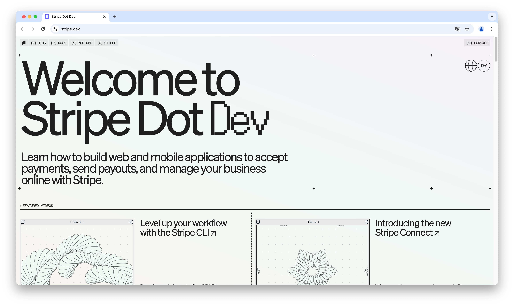
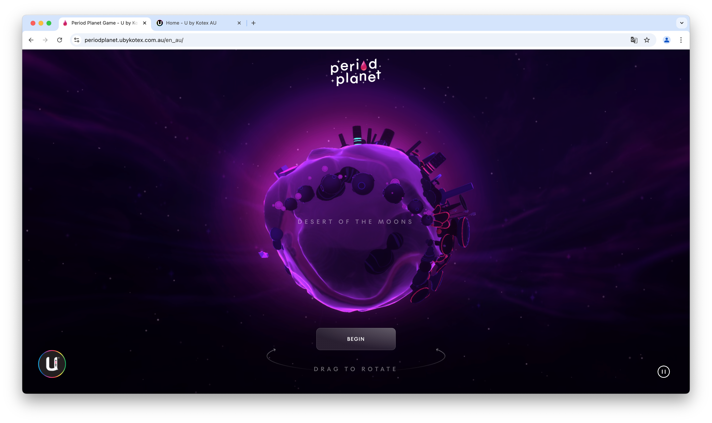
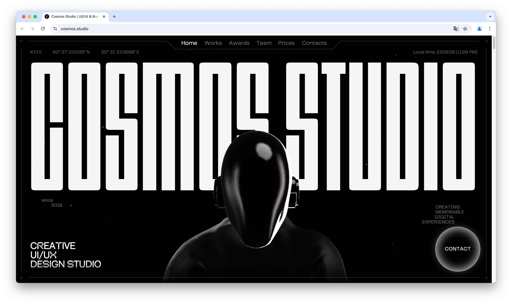

Stripe Dot Dev
Me ha gustado esta web debido a su estetica minimalista. Hay interacciones cuando pasas el raton por la web, creando asi un fow satisfactorio y una experiencia de usuario divertida.
Period Planet
Me gusta la función educativa que tiene una función educativa mediante un juego interactivo.
Cosmos Studio
Esta web te presenta los trabajos hecho por un studio de UX/UI, de un manera devertida en Dark Mode style.
Serious.Business

Esta web te muestra el trabajo de este studio de una manera elegante, pero divertida. Usa una gama de colores variada que permite al usuario identificar los distintos apartados de la web.